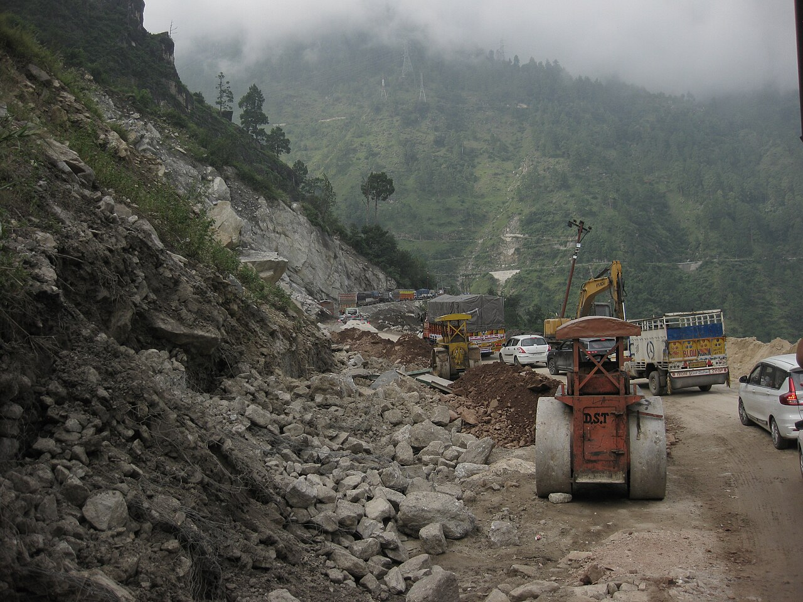
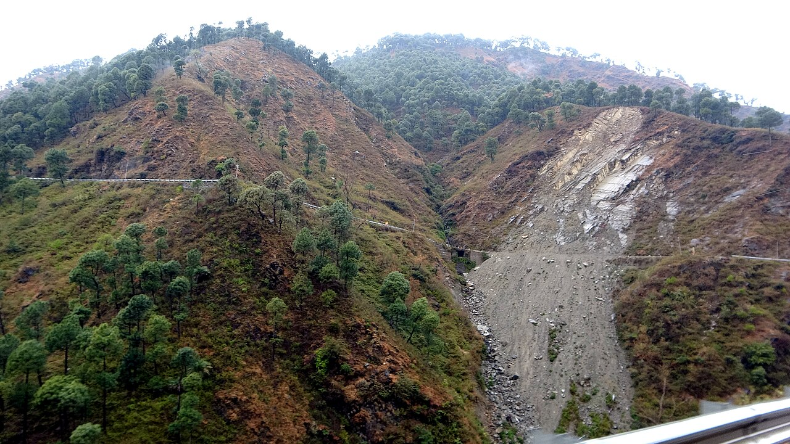
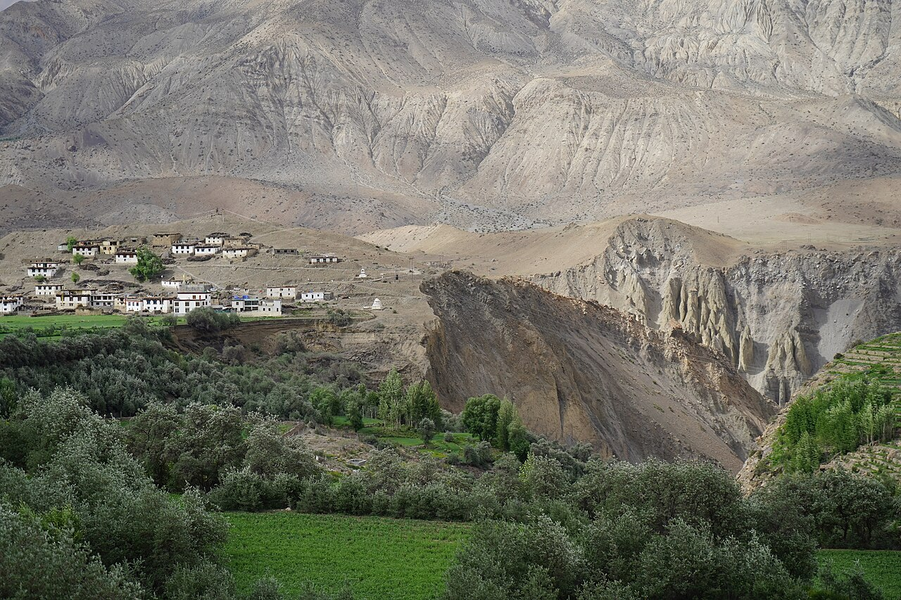

Landslide Prediction & Risk Assessment Platform
Trained on 12,409 georeferenced inventory records across Himachal Pradesh, India. Evaluates multi-variable terrain morphology, precipitation triggers, drainage proximity, and land-use patterns across 4 machine learning pipelines.
1. Comprehensive Inventory
12,409 observation locations across Himachal Pradesh (9,945 train / 2,464 test) with 47 engineered terrain & climate predictors.
2. Multi-Model Consensus
Compares XGBoost (81.86% acc, 0.9026 AUC), Random Forest (81.09%), Logistic Regression (78.65%), and SVM (78.41%).
3. Early Warning Advisory
Interactive simulator provides real-time geotechnical slope failure probabilities and automated engineering mitigation advisories.
photo_camera Documented Field Landslides & Geological Hazards in Himachal Pradesh
Direct visual evidence of slope instability modes analyzed in this machine learning project.



| Model Architecture | Status | Test Accuracy | Recall (Class 1) | Precision | Specificity | F1-Score | ROC-AUC | PR-AUC |
|---|
| Performance Dimension | Formula / Interpretation | XGBoost | Random Forest | Logistic Regression | SVM (RBF) |
|---|---|---|---|---|---|
| Accuracy | (TP + TN) / Total | 81.86% | 81.09% | 78.65% | 78.41% |
| Recall / Sensitivity | TP / (TP + FN) — Landslide detection | 86.08% | 84.04% | 84.67% | 84.20% |
| Precision | TP / (TP + FP) — Alarm reliability | 80.22% | 80.26% | 76.49% | 76.39% |
| Specificity | TN / (TN + FP) — Safe terrain recognition | 77.35% | 77.94% | 72.23% | 72.23% |
| F1-Score | Harmonic mean (Precision, Recall) | 83.05% | 82.10% | 80.37% | 80.10% |
| ROC-AUC | Area under ROC curve | 0.9026 | 0.8936 | 0.8681 | 0.8649 |
| PR-AUC | Average Precision score | 0.9019 | 0.8920 | 0.8678 | 0.8556 |
| Miss Rate (False Negative Rate) | FN / (TP + FN) — Dangerous omissions | 13.92% | 15.96% | 15.33% | 15.80% |
| Inference Latency (Test Set) | Runtime on 2,464 samples | 4.5 ms | 12.1 ms | 0.8 ms | 185.0 ms |
Terrain exhibits critical failure risk driven by high slope inclination (34°) and severe monsoon precipitation saturation (1,650 mm). Toe proximity to water channel creates heightened scouring hazards. Mitigation measures recommended: slope drainage diversion, wire-mesh netting, and immediate early-warning monitoring.
| Sample ID | Actual Label | XGBoost Pred | Confidence | Confusion Status | Slope (Z) | Rainfall (Z) | Elevation (Z) | NDVI (Z) | Hazard Index | Land Cover (LULC) |
|---|
- Winsorisation (Outlier Clipping): Extreme standard scores clipped at Q1 - 1.5×IQR and Q3 + 1.5×IQR based solely on training distribution.
- Logarithmic Transforms: Mitigated heavy right-skew on river distances and drainage flow accumulation (`Dist_River_log`, `FlowAccumulation_log`).
- Circular Aspect Encoding: Angular slope orientation decomposed into continuous orthogonal components: `Aspect_sin` and `Aspect_cos`.
- Polynomial (Squared) Terms: Captured non-linear geotechnical failure thresholds for slope, rainfall, and elevation (`Slope_sq`, `Rainfall_sq`).
- Domain Interaction Indices: Modeled physical pore-pressure and shear mechanisms: `Slope_x_Rainfall`, `Slope_minus_NDVI`, `Hazard_index`.
- Quantile Discretization: Created robust piecewise bins (`Rainfall_bin`, `Slope_bin`, `Elevation_bin`).
- Outlier Indicator Flags: Explicit flags for extreme sparse vegetation (`NDVI_extreme_low`) and flash flood risk (`Flow_high`).
- Hierarchical Land-Cover Grouping: Aggregated sparse LULC codes into 4 broad functional classes and marked rare occurrences (`LULC_rare`).
- Out-of-Fold Target Encoding: Smoothed categorical risk representation (`LULC_te`) with 5-fold cross-validation on train data to prevent label leakage.